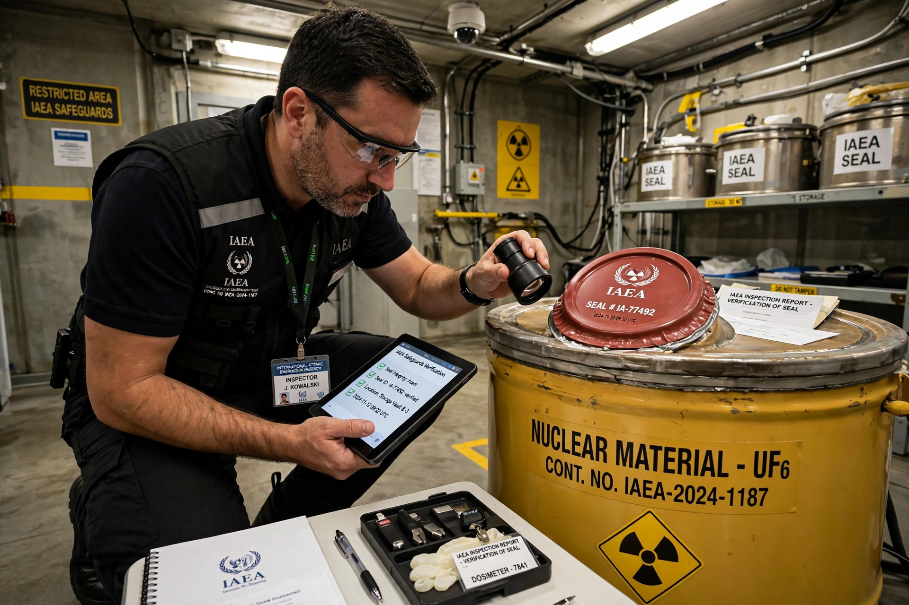

Safeguards, in international law and arms control, are measures by which the International Atomic Energy Agency (IAEA) verifies that states comply with their commitments to use nuclear material and facilities only for peaceful purposes. The term is also used more generally for protective measures in trade, finance and other fields; this article focuses on IAEA safeguards.

Under the Treaty on the Non-Proliferation of Nuclear Weapons (NPT, 1968), non-nuclear-weapon states agree to accept comprehensive safeguards on all nuclear material in peaceful activities. Nuclear-weapon states have voluntary offer agreements, and non-NPT states have item-specific agreements.
Safeguards include nuclear material accountancy, containment and surveillance (seals, cameras), on-site inspections, environmental sampling, and satellite and open-source analysis. The 1997 Model Additional Protocol expanded inspectors' access and information rights after undisclosed programmes were found in Iraq and North Korea.
Disputes over safeguards implementation have featured in cases involving Iran, Syria, North Korea and others, playing a central role in international non-proliferation diplomacy.